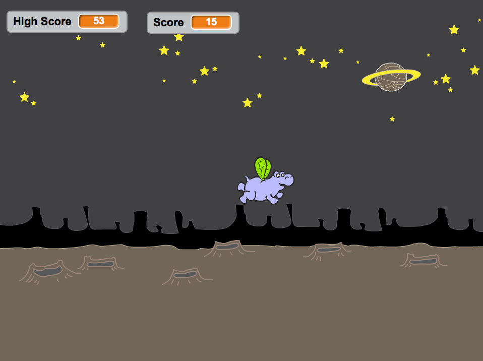
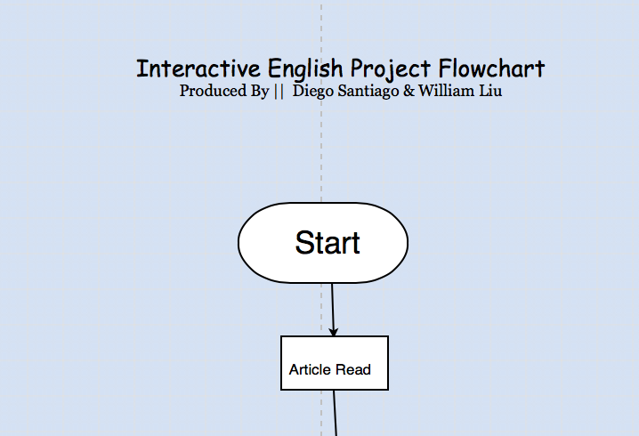

This is my Scratch Project. Click on the picture above to play!

I created this scratch game along with my partner Julian Ruiz called "Teleporting Hippo Adventure". Click on the picture to check it out!
Click on the picture of Rosa Parks in the bus above to experience an interactive program my partner and I created on an article by Jesse Jackson.

Here is the flowchart to my Interactive English Project where you can visualize what is going on in our program.